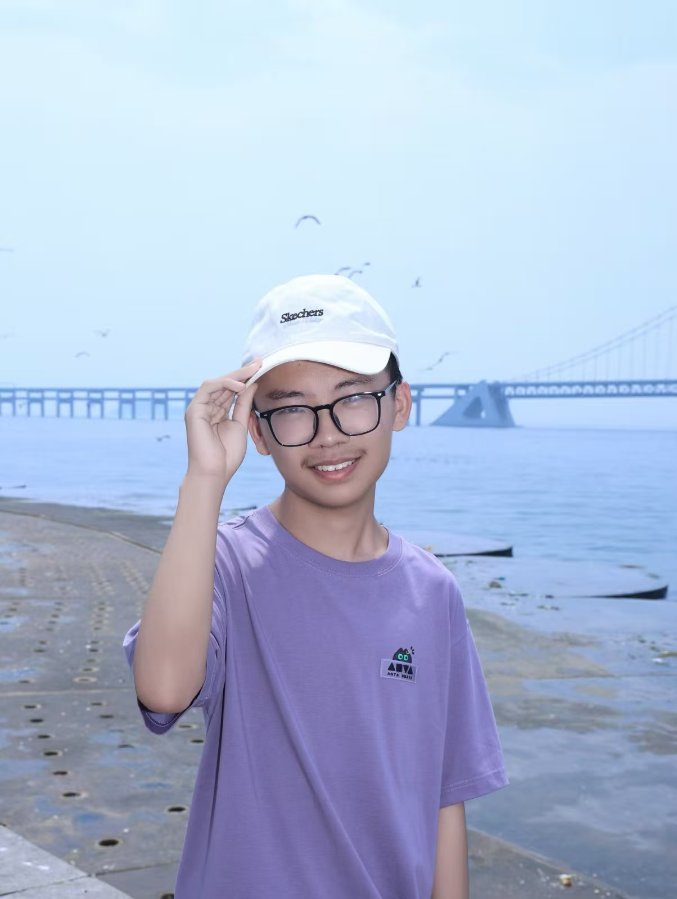

Real2SimHub
Contributor · PKU-VaLuE Lab
An open-source initiative for real-to-simulation research that brings together Real2SimLab, a platform for running and evaluating methods, and Awesome-Real2Sim, a curated research map.

I am a second-year undergraduate studying physics at Peking University and a research intern working with Prof. Yiwu Zhong. I am interested in artificial intelligence and physical simulation, especially how computational models can capture the behavior of physical systems.
I currently follow work on how generative models can build simulated environments. I am also interested in embodied AI, particularly how agents learn to interact with their surroundings and adapt when conditions change.
Contributor · PKU-VaLuE Lab
An open-source initiative for real-to-simulation research that brings together Real2SimLab, a platform for running and evaluating methods, and Awesome-Real2Sim, a curated research map.
–
School of Physics · Second-year undergraduate